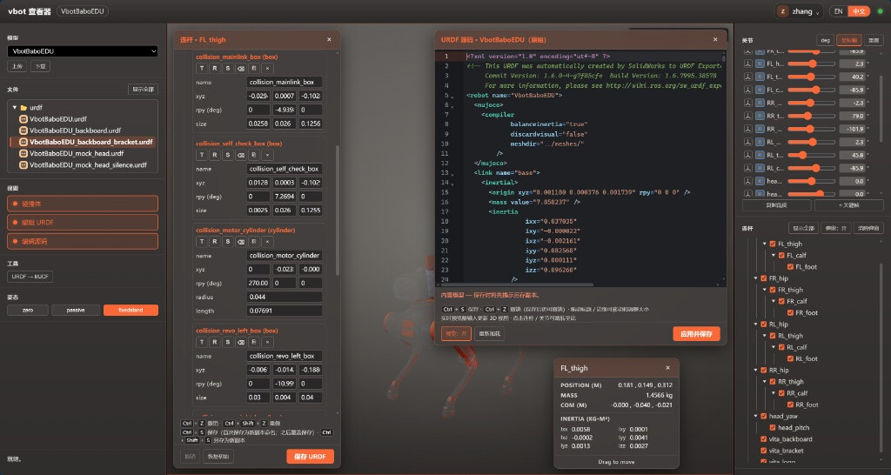

双大脑硬件架构拆解与物理边界

🎙️ 展开直播口播导语（讲师版）
“欢迎回到直播间！在上一篇，我们让机器狗稳稳走出了第一步。但现在，我们必须收起感性的兴奋，换上一副‘硬核工程师’的严谨眼镜。想安全地驾驭这只 16 公斤的钢铁机器狗，秘密就在于 VBOT 极其精妙的‘双脑架构’。打个生物学的比方：
- 计算主板，就像是大脑皮层，专门负责高级的 Agent 规划、视觉思考和语音大模型推理；
- 网关主板，就是它的神经系统与脑干，死死盯住底层的 14 个关键电机还有电源状态。
哪怕你在大脑皮层跑的 AI 代码死锁甚至疯狂报错，底层的神经反射也能瞬间兜底，确保机器狗绝不会发疯撞墙！今天，我们就把这套生物级架构彻底扒开看清楚！”
本课学习目标
- 说清双脑物理隔离：计算主板
192.168.126.2（Ubuntu 22.04 / ROS 2）与主控网关板192.168.127.10（RTOS） - 解释 Linux 里为什么根本找不到
wlan0，并建立正确的排查路径 - 记住 14 个 VGeer 关节的分布：四足各 3 自由度 + 头部 2 自由度，单体峰值扭矩 24.5 N·m
- 划清开发边界：哪些任务必须跑在计算主板、哪些绝对不能绕过网关板
- 用“双脑职责路由器”判断一个任务该连哪块板、走什么入口
一、双脑拓扑深度剖析：大脑皮层与神经脑干
VBOT 放弃了消费级机器人常见的“单板大杂烩”设计，采用工业级物理级硬件隔离：一颗板负责“思考”，另一颗板负责“保命”。先看清整机的物理连接关系——开发者电脑经千兆有线接入计算主板，计算主板再经板间高速总线连接网关板：
Type-C 扩展口
- 8 核 ARM64
- 128 TOPS NPU
- 视觉 VLM / 语音 ASR
- ROS 2 / Python
192.168.127.x- 14 轴 VGeer 电机
- BMS 594 Wh
- 0.5 s 看门狗
- Wi-Fi 6 / BT 5.2 / UWB
计算主板（192.168.126.2）—— 开发者的主战场
- 算力配置：8 核 ARM64 处理器 + 128 TOPS NPU，为轻量化视觉大模型（如 Qwen2-VL）、YOLO 实时目标追踪与 Cartographer 激光 SLAM 提供充沛算力。
- 开放程度：官方开放
vbot账号的 SSH 登录，但它是普通用户——当前 1.6 固件未开放 root / sudo。可在家目录与/userdata/vbot用户空间里创建 Conda / Python 虚拟环境、配置 Git 仓库、用colcon把自己写的 ROS 2 包装到用户目录；apt装系统包、改系统网络、加载内核模块、启停系统服务不在授权范围内，需放到外接上位机或提前向官方申请。 - 数据接口：对外暴露机身唯一的千兆有线网络节点（系统内网卡
eth2，默认固定 IP192.168.126.2）。
主控网关板（192.168.127.10）—— 机器狗的生命盾牌
- 运行机制：运行超低延迟、强确定性的硬实时操作系统（RTOS），响应可达微秒级。
- 物理管辖：直接控制分布在四肢与头部的 14 个自研 VGeer 一体化高扭矩关节电机。
- 不可越级性：不对外开放 SSH 或 Root 登录。即使计算主板上的 Python 代码因死循环或内存暴涨导致 Linux 内核挂起，网关板也能在毫秒级内切断动力或保持自平衡姿态，绝不让电机失控过扭。
| 对比维度 | 计算主板（大脑皮层） | 主控网关板（神经脑干） |
|---|---|---|
| 内网地址 | 192.168.126.2（eth2，千兆有线） |
192.168.127.10（板间总线 192.168.127.x） |
| 操作系统 | Ubuntu 22.04 LTS + ROS 2 | 硬实时 RTOS，微秒级确定性响应 |
| 算力配置 | 8 核 ARM64 处理器 + 128 TOPS 混合精度 NPU | 实时微控制器，专注电机驱动与安全闭环 |
| 核心职责 | ROS 2、Aorta、视觉 VLM、语音 ASR、Python 脚本 | 14 轴电机驱动总线（CAN-FD / RS-485）、BMS 594Wh、看门狗与急停熔断、Wi-Fi 6 / 蓝牙 5.2 / UWB |
| 可访问性 | 开放 ssh vbot@192.168.126.2 登录，但 vbot 是普通用户，当前 1.6 固件未开放 root / sudo |
不开放 SSH 或 Root 登录，开发者不可直连 |
| 失效后果 | AI 代码死锁 / 内存暴涨时，Linux 可能挂起 | 毫秒级切断动力或保持自平衡，兜住底层安全 |

ssh vbot@192.168.126.2。网关板不开放直连，任何“登录网关板改底层”的尝试都属于越级操作。ssh vbot@192.168.126.2二、极客经典困惑：为什么 Linux 里根本找不到 wlan0？
ifconfig 或 ip link，发现只有 eth0、eth2、lo，无线网卡 wlan0 到底去哪了？！”这是几乎所有刚接触 VBOT 的极客都会踩的第一个大坑。答案不是驱动没装、也不是系统坏了，而是 Wi-Fi / 蓝牙的射频硬件根本不在 Linux 这一侧。看下面这条数据路径：手机 App、4 麦克风与 WiFi 按键的请求，全部先进入网关板 RTOS，再由板间总线转交给计算主板：
192.168.127.10
192.168.127.x
192.168.126.2
原因一：射频软中断隔离，把抖动挡在 Linux 之外
传统无线网卡在进行 Wi-Fi 数据重传、信号协商时，会向 Linux CPU 发出大量不可控的软中断（softirq）。在毫秒级的高频运动平衡控制中，哪怕 5ms 的延迟抖动都会导致机器狗落足不稳摔倒。因此，物理 Wi-Fi 芯片直接硬件焊死在网关板上，与 Linux 计算板物理隔离。
原因二：网关板扮演路由器，无线流量透明转发
在最新 V1.6 固件中，当启用板载 Wi-Fi 时，网关板自身扮演“路由器”角色，通过板间总线（192.168.127.x 网段）将无线流量透明转发给计算主板。开发者完全无需在 Linux 层折腾复杂的 wpa_supplicant 无线驱动。
正确认知与排查路径
- 先确认登录目标执行
ssh vbot@192.168.126.2后运行ip link，只看到eth0、eth2、lo是设计结果，不是故障。 - 不要在计算主板装无线驱动射频芯片不在 Linux 侧，安装驱动或运行
wpa_supplicant都不会凭空变出wlan0。 - 配 Wi-Fi / 蓝牙走官方入口由网关板托管射频；网关板不开放直连，开发者应使用官方 App 与系统设置界面。
- 联网异常先查转发链路确认 Wi-Fi 已启用，再检查板间总线
192.168.127.x的透明转发，而不是反复扫描无线网卡。
wlan0 不是“丢了”，而是从来就不在 Linux 的硬件清单里。Linux 看到的 eth0、eth2、lo 才是它真正拥有的三块接口。三、14 个 VGeer 一体化关节动力学矩阵
理解关节命名与分布，是编写复杂运动逻辑与排查电机故障的基础。四足每条腿 3 个自由度，头部 2 个自由度，合计 14 个自研 VGeer 一体化高扭矩关节电机：
每条腿 3 自由度：hip 航向 / thigh 俯仰 / calf 屈伸 · 头部：pitch 俯仰 / yaw 偏航 · 合计 12 + 2 = 14
| 关节归属 | 关节编号（名称标识） | 自由度 | 职责与工程警示 | 峰值扭矩 |
|---|---|---|---|---|
| 左前肢（FL） | FL_hip, FL_thigh, FL_calf |
3 自由度（航向 / 俯仰 / 屈伸） | 承载前向抓地力与避障支撑 | 24.5 N·m |
| 右前肢（FR） | FR_hip, FR_thigh, FR_calf |
3 自由度（航向 / 俯仰 / 屈伸） | 协同双目前端俯仰平衡 | 24.5 N·m |
| 左后肢（RL） | RL_hip, RL_thigh, RL_calf |
3 自由度（航向 / 俯仰 / 屈伸） | 主动力驱动推力来源 | 24.5 N·m |
| 右后肢（RR） | RR_hip, RR_thigh, RR_calf |
3 自由度（航向 / 俯仰 / 屈伸） | 主动力驱动推力来源 | 24.5 N·m |
| 头部交互（Head） | head_pitch, head_yaw |
2 自由度（俯仰 -30°~+45°，偏航 ±60°） | 视场朝向与点头 / 摇头拟人交互，禁止悬挂 >500g 负重 | 24.5 N·m |
| 合计 | 14 个 VGeer 关节 | 14 自由度 | 四足 12 + 头部 2，由网关板统一驱动 | 24.5 N·m（单体峰值） |

head_pitch 行程 -30°~+45°，head_yaw 行程 ±60°，且禁止悬挂 >500g 负重。给大头挂相机云台、机械爪之前，先算清重量，否则最先过载的就是这两个自由度。四、物理边界与开发准则：什么能碰、什么绝不能绕
双脑不是营销概念，而是硬性开发边界。把任务放错板子，轻则跑不起来，重则触碰整机安全闭环。下面两条清单请直接背下来：
✅ 必须跑在计算主板（192.168.126.2）
- ROS 2 节点、Aorta 应用与 Python 脚本
- 视觉 VLM（如 Qwen2-VL）、YOLO 目标追踪
- Cartographer 激光 SLAM 与激光点云处理
- Conda / venv / Git 等用户态开发环境
- 语音 ASR 与高层 Agent 规划
⛔ 绝对不能绕过网关板（192.168.127.10）
- 14 个 VGeer 电机的驱动与力矩输出
- BMS 电源管理（594Wh、实时温度与过流监测）
- 0.5s 无指令悬停看门狗与姿态倾覆急停熔断
- Wi-Fi 6 / 蓝牙 5.2 / UWB 的射频托管
- 任何直接登录网关板或改写底层策略的操作
一条指令的合法路径
高层算法可以把“走”拆成速度、步态与力矩意图，但最终落地必须经过网关板的实时闭环。合法链路只有这一条：
这条链路的意义在于兜底：即使计算主板的 Python 代码因死循环或内存暴涨导致 Linux 内核当场挂起，网关板也能在毫秒级内切断动力或保持自平衡姿态，绝不让电机发生失控过扭。网关板不开放 SSH 或 Root 登录，正是这层安全长城的最后一块砖。
三句话开发准则
- 思考放大脑皮层凡是感知、规划、推理、交互类代码，全部放在计算主板的 Ubuntu 22.04 / ROS 2 环境里。
- 动作走脑干凡是电机、电源、射频相关的动作，必须经过网关板 RTOS，由实时闭环统一执行。
- 怀疑先看边界连不上、找不到设备时，先判断任务属于哪块板，再找该板对应的入口，而不是在 Linux 里盲试驱动。
五、🧪 小实验：双脑职责路由器
下面 4 个任务分别该交给哪块板？点击任务，立即查看目标板、入口与判定原因：
把任务路由到正确的板子
判定规则：绿色 = 开发者可操作，黄色 = 需官方接口，红色 = 禁止触碰。
本课小结与下一课预告
把这一课压缩成一张路由表，以后遇到任何任务，先查表再动手：
| 你要做的事 | 目标板 | 入口 / 边界 |
|---|---|---|
| 写 ROS 2、跑视觉 / 语音、读点云 | 计算主板 192.168.126.2 |
ssh vbot@192.168.126.2，在 /userdata/vbot 用户空间内自由开发 |
装 apt 系统包、改系统网络、加载内核模块、启停系统服务 |
计算主板（系统层） | 当前 1.6 固件未向 vbot 开放 sudo，改由外接上位机承载或提前向官方申请支持 |
| 配 Wi-Fi / 蓝牙、使用 UWB 能力 | 主控网关板 192.168.127.10 |
官方 App / 系统设置入口；网关板不开放直连 |
| 驱动电机、改电源、动看门狗 | 主控网关板 RTOS | 禁止越级，只能走官方接口 |
- 计算主板
192.168.126.2是大脑皮层与开发者主战场；网关板192.168.127.10是神经脑干与生命盾牌。 - Linux 没有
wlan0是物理隔离设计：射频在网关板，V1.6 固件由网关板做透明转发，不要在 Ubuntu 里装无线驱动。 - 14 个 VGeer 关节 = 四足 4×3 + 头部 2，单体峰值扭矩 24.5 N·m；头部俯仰 -30°~+45°、偏航 ±60°，禁止悬挂 >500g。
- 一条合法指令链：计算主板 ROS 2 → 板间总线
192.168.127.x→ 网关板 RTOS → 14 个 VGeer 电机。